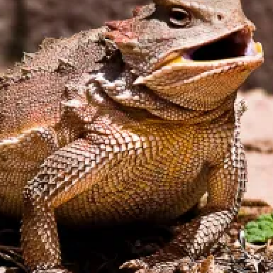
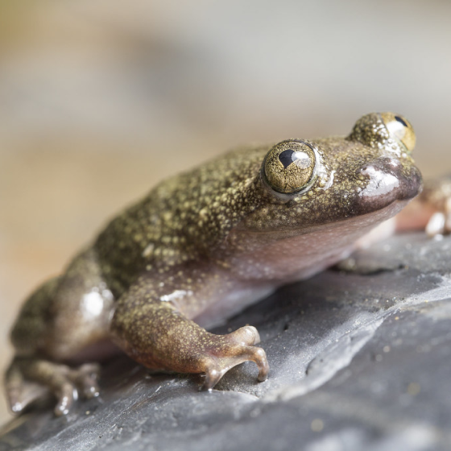
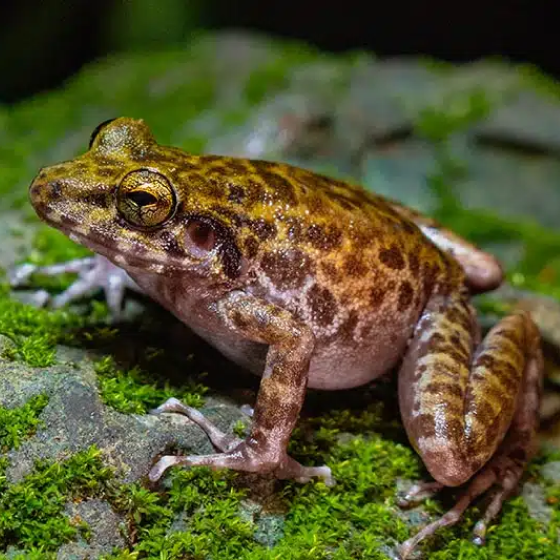

Palawan Horned Frog
Palawan Horned Frog
The Palawan Horned Frog lives in the leaf litter of montane and lowland rainforests This frog is endemic to Balabac and Palawan Islands.
Learn More

Philippine Flat-Headed Frog
Philippine Flat-Headed Frog
It is a large, heavy-bodied, highly aquatic frog found in the waters of mountain streams on the Philippine islands of Busuanga and Palawan.
Learn More

The Gigantes Forest Frog
The Gigantes Forest Frog
A species of small-medium frogs discovered to have adapted the limestone cave environment of Gigantes Island in Iloilo, Philippines
Learn More